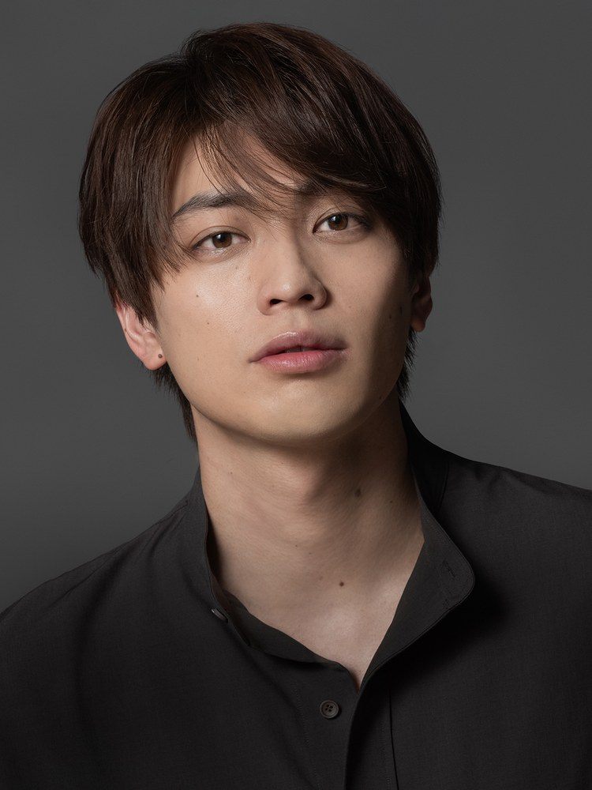

H.
东启介
← 回到资讯首页
KEISUKE HIGASHI · PERSONAL ARCHIVE
KEISUKE HIGASHI
东启介
KEISUKE HIGASHI · 编年档案
演出 · 影视 · 采访 · 杂志 · 广播 · 活动

2025 30岁生日音乐会《afterglow》官方宣传照
2013 — 2027
东启介 · 编年录
编年档案
视频资料
杂志
B站
⌕
所有年份
所有类别
全部资料
已核实
待核实
所有视频片单
只看有图
切换列表
时间 ↑
重置
全部记录
回到顶部 ↑
×
打开原图 ↗
回到原始出处 ↗
← 上一张
下一张 →